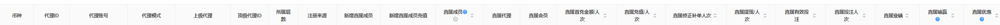

1 代理数据查询教程
该模块主要是查询当前平台中所有的代理的直属数据、其他数据和个人数据的提现、充值、有效投注、业绩、输赢、优惠等涉及所有的日常行为的数据。
特别说明：一级净盈利和一级代理没有其他数据
1.1 表头展示部分
该部分可针对表头来进行设定，同时可以进行多选。
选择直属数据，则显示的所有的代理的直属成员的数据；
选择其他数据，则显示业主中所有代理的其他成员数据；
选择个人数据，则显示该代理个人数据情况；
多选是，表头排序为直属数据--其他数据--个人数据依次排序；
如下图所示
1.2 搜索部分
搜索部分可以根据选择对应的币种，显示当前币种的总计。
如下图所示：

1.3 部分字段说明
代理账号：可点击，点击查询该代理账号的下级代理
上级代理：可点击，点击查询该代理账号的下级代理
直属（其他）成员：该代理的直属人数总和
直属（其他）代理：该代理下的直属代理总和
直属（其他）会员：该代理下的直属会员总和
其他的字段则为统计时间内的查询数据。
直属（其他）成员：直属下级人数总和，点击+可展开，点击展开之后，则显示直属额外的字段信息。
特别说明：仅限搜索当日数据会去重，若查询跨日数据，展示的人次不去重
特别说明：代理模块的时间查询为时间必填，不在支持删除时间查询
代理数据查询所有的页面增加顶级代理ID和代理层数展示